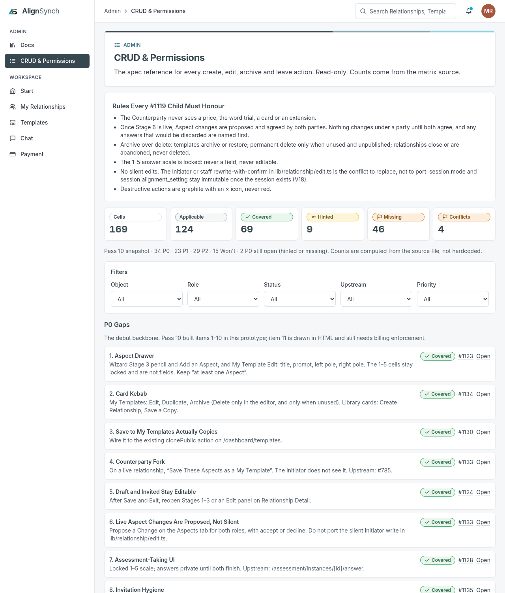
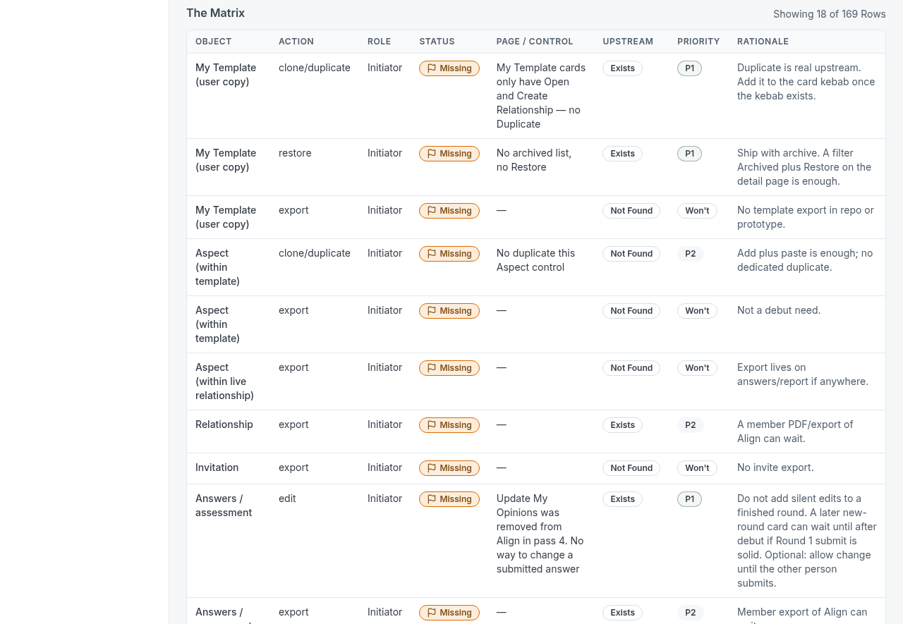
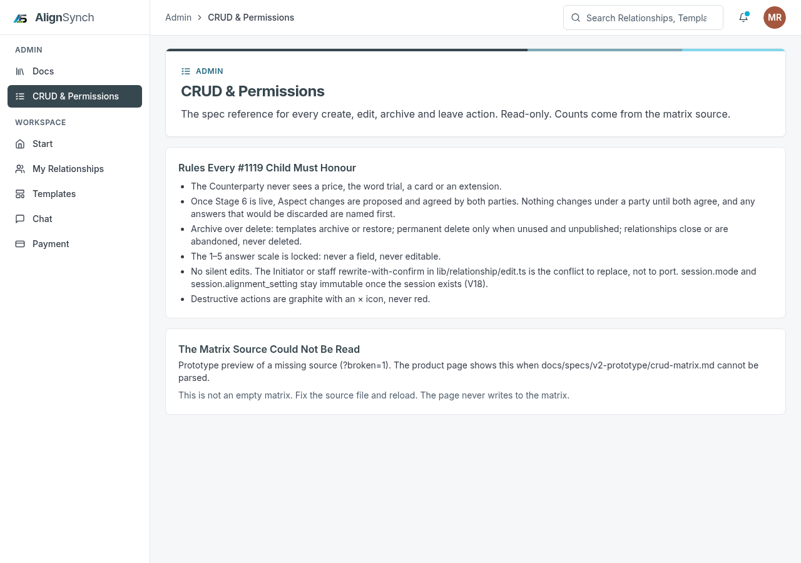
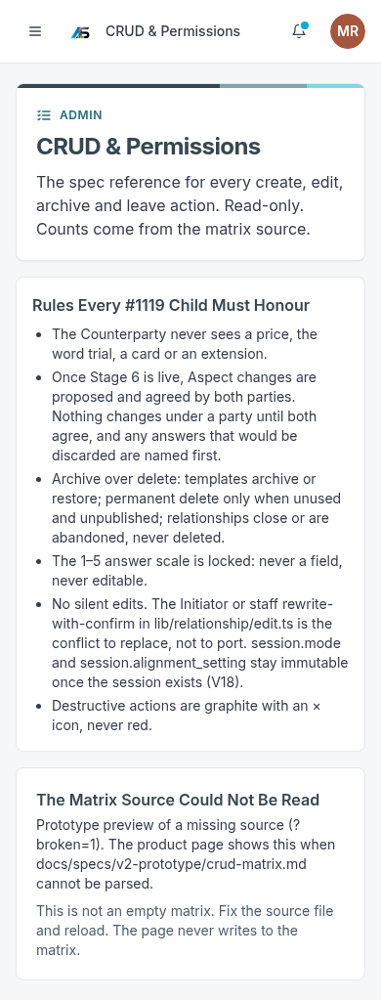

CRUD & Permissions
One read-only page that shows who can create, edit, archive or leave each thing in AlignSynch, and where the build still falls short.
When someone asks “can a Counterparty do that?” or “is archive built yet?”, this page answers. It lists every action on every object (templates, Aspects, relationships, invitations, answers, chat) for each role. For each one it shows whether v2 covers it, whether the app already has it, and how much it matters for launch. It’s read-only, and its counts come straight from the matrix source file, so it can’t drift from the spec.
At a Glance
| Where | Admin rail › CRUD & Permissions, directly under Docs · /admin/permissions |
| Who sees it | Admin seats only. Support seats don’t see the row. Members get a 404, and anyone signed out is sent to sign in first. |
| What you can do | Read, filter, and share a filtered link. Nothing on the page edits anything. |
| Where the data lives | docs/specs/v2-prototype/crud-matrix.md, read each time the page loads |
How It Works
1. Start with the rules and the counts
The top of the page repeats the six rules every v2 feature must honour. One example: the Counterparty never sees a price, the word trial, a card or an extension. Below the rules, the count cards show the state of the whole matrix at once: Cells, Applicable, ✓ Covered, ≈ Hinted, ⚑ Missing and ⚑ Conflicts.

Admin · CRUD & Permissions · top of page (pass 10 snapshot)
2. Check the launch backbone in P0 Gaps
P0 Gaps lists the 11 things v2 can’t launch without, such as the Aspect drawer, card kebabs and invitation hygiene. Each has its status chip, its issue and a link to the screen. Items 1–10 are covered. Item 11, billing enforcement, is drawn but still needs the billing work (#1121, #1115).
3. Narrow the matrix with filters
Pick any mix of Object, Role, Status, Upstream and Priority. The table updates, and the line above it says how many rows match: “Showing 18 of 169 Rows”. The filters stay in the address, so you can paste the link into an issue and the reader sees the same view. Clear Filters resets them.

Admin · The Matrix filtered to Initiator + Missing
On a phone, each row becomes a stacked card.
4. Read the Conflicts and Decisions
Four topics where the prototype and the existing app disagree are laid out side by side: Prototype, Upstream, the v2 rule, and a recommendation. Disagreements go to epic #1119, never into this page.
5. If the source can’t be read
The page never pretends the matrix is empty. If the source file can’t be parsed, it says The Matrix Source Could Not Be Read and gives the reason. The counts, filters and table are hidden until the file is fixed.

Admin · Source Could Not Be Read · desktop

Admin · Source Could Not Be Read · mobile
Good to Know
- Counts are live. They’re recomputed from the source every time. The screenshots show the pass 10 snapshot (69 / 9 / 46), so expect different numbers on the page.
- Statuses are icon plus word. ✓ Covered (green), ≈ Hinted (amber), ⚑ Missing (orange), ⚑ Conflict (orange), N/A (neutral). Nothing is red.
- It’s not
/admin/gaps. That’s the console gaps page, a different tool.
For the Build Team
Acceptance (bundle 12)
- [ ] The rail row CRUD & Permissions sits in
group-admindirectly afteradmin-docs,needs: "admin", icondashboard. - [ ] Gates match
/admin/docs:requireAdminProduct()thenrequireAdmin(). Members get 404 (never 403), and signed-out users go to/login?next=/admin/permissions. - [ ] Rows are parsed from
crud-matrix.mdat request time. Counts are computed, never hardcoded. - [ ] Filters combine, live in the URL, and show “Showing N of 169 Rows”. Empty: “No rows match these filters.”
- [ ] Failure state is “The Matrix Source Could Not Be Read”, without counts, filters or table.
- [ ] Read-only: no form, write path or server action. Cards have no shadow. axe 0 at 390 and 1280.
Open deltas between the design and the shipped page (from the Launch Desk review of #1179, 17 Nov; no follow-up PR found):
- The shipped table follows the source file’s columns (Object, Action, Role, Prototype, Selector, Upstream, MVP, Rationale). The design shows Status, Page / Control and Priority. One of them needs to change: either the doc follows the source, or the source is renamed.
- Status cells shipped as bare words. They need icon plus word.
- “Not found” and “Clear filters” should be Not Found and Clear Filters.
- #1179 shipped without 390 or 1280 screenshots, so there’s no QA capture of the built page yet.
References
| Shot | Source | Original |
|---|---|---|
| matrix-top-desktop | Bundle 12 (cropped to the first 1500 px) | spec-design-v2-bundles/12-spec-design-page-admin-crud-matrix-v2/reference/admin-crud-matrix-1280.png |
| matrix-filtered-table-desktop | Bundle 12 (cropped to the table) | …/12-…/reference/admin-crud-matrix-filtered-1280.png |
| source-unreadable-desktop | Bundle 12 | …/12-…/reference/admin-crud-matrix-broken-1280.png |
| source-unreadable-mobile | Bundle 12 | …/12-…/reference/admin-crud-matrix-broken-390.png |
These are design references, rendered from the prototype on 16 Nov. The shipped page may look different (see Open deltas). Swap them for QA captures once the built page has been captured.